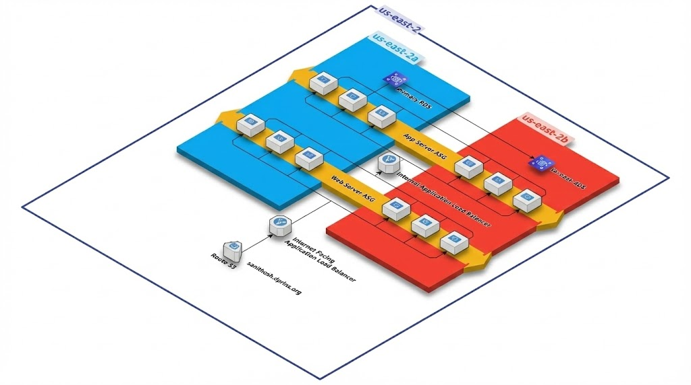

Projects

Scalable Exam Result Web Application – AWS
Designed and deployed a highly available, secure 3-tier web application on AWS using NGINX (web), Flask (app), and RDS MySQL (database). Built a custom VPC with public/private subnets.
EC2VPCRDSALBACMRoute 53

Cloud Portfolio Website on AWS Amplify
This project is a personal portfolio website hosted on AWS Amplify with a fully automated CI/CD pipeline integrated via GitHub. Static assets are hosted on S3 and delivered globally via CloudFront CDN.
AmplifyCloudFrontRoute 53CloudWatchS3WAF